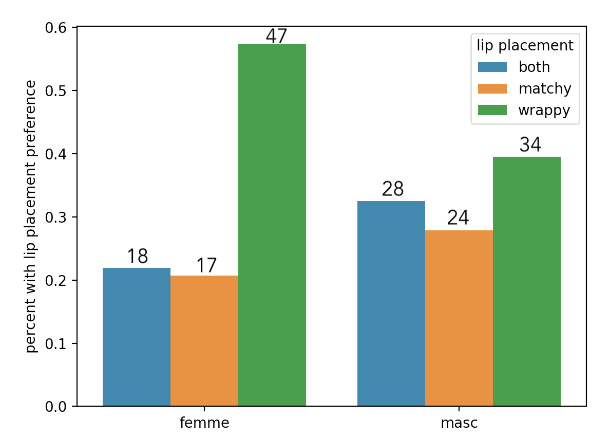

Have you ever started kissing a new person, only to be totally confused or weirded out by a kissing style very different from what you were used to? I didn’t realize how wide a range of kissing preferences people could have until recently!
Most notably, for years I thought lips always matched up in make-out sessions (or would if the kissers’ faces weren’t rotated), but then I discovered that some people kiss where their lips wrap around the other person’s top or bottom lip. After learning about this, I was curious which was most common and asked some of my friends about how they kissed. It turns out that many people have strong opinions about their preferences. When some folks with different styles each claimed “most people kiss like me”, I knew someone must be wrong.
Since I love to analyze things, I eventually did the most on-brand thing I could to get to the bottom of this: I made a survey. Yes, it felt a little weird to post so publicly and blatantly about kissing, but this was Very Important Science and I really wanted answers!!
… and I got just over 200 responses! Then, I learned some stats and data science to bring you fancy charts and analysis.
Note: I recognize that these questions are kind of reductive, and may not capture the nuance of how people think about kissing. I encouraged people to only answer the questions they felt like they could pick an answer to, and to share other thoughts they had at the end of the form.
Another note: the folks that filled out this survey are mostly folks connected to me on various social media platforms. I have no idea if these results match the distribution of any wider population’s preferences.
Be sure to check out the funny and wholesome free-form comments at the end of the report in the “People’s broader kissing opinions” section!
Q1: which of these best describe the preferred placement of your lips?
I’m a bit surprised by the results! I had a hunch that “wrap” was more popular than “match”, but I was expecting to see more of the “both” option. It’s interesting to see that the kissing style I didn’t even know existed until a year ago is the clear preference of the population that filled out my survey.
Q2: do you like to use tongue?
Because kissing is so varied in so many different ways, I generally tried to keep survey questions pretty broad and as straightforward to answer as I could.
For example, I would love to see a distribution of how many people average at 10% tongue, 20% tongue, 30% tongue, etc… but this seems incredibly difficult for someone to be able to accurately estimate in themselves. Also, there is so much variance in tongue use (e.g. does just tongue on lips count?) that I’m not sure how useful it would be to get more specific on frequency.
Q3: how much do you adapt to the other person’s kissing style?
(inspired by some folks who seemed so adamant that most people kissed like them)
It’s neat that more people adapt to the person they’re kissing than try to get the other person to adapt to them. I wonder how often people are leading (or kissing someone who is trying to follow them) and don’t realize this is happening!
The majority “mix” warms my heart. I like what someone who responded “mix of leading and following” said: “Issa dance ☺️”
Q4: your gender
I asked about gender in the survey because I was interested in running some correlation analysis and was curious if the way people identified with gender had any influence on their kissing preferences.
Gender is a pretty nuanced thing and difficult to measure. With some advice from a friend, I collected answers to this question in a free-form text box, and then did my best to normalize the answers. I got a wide variety of answers, including several people who didn’t write anything.
I ran two sets of tests checking for gender correlation. In the first set, I split gender by “woman”, “man”, and “misc”. In the second, I used the categories “masc” and “femme”, which included people who labelled themselves in some non-binary masc/femme way, and didn’t include data points from people who didn’t use any masc/femme language in their gender responses.
I recognize that gender is nuanced and doesn’t fit neatly into boxes, but was still curious to see how people’s self-reported gender might relate to their behavior. If you have thoughts or resources you’d like to share on doing research involving gender, I’d love to hear them!
I was super curious if someone’s answer to one of these questions had any correlation to their answer to another question. Do people who kiss with matched up lips use more tongue? Does gender influence if people lead or follow?
I did some research on analysing categorical survey data for correlations, and ended up using the chi-square and fisher exact tests on the data. These tests take data from two survey questions, do some math on the responses, and calculate a “p value” that represents the probability that I could end up with this data set if people’s answers to the two questions had no influence on each other. Getting a value of p < 0.05 means there’s less than a 5% chance, and this is a common industry standard for concluding that answers to the two questions are likely correlated.
If I administered the tests correctly… there are no statistically significant correlations :(
However, this is quite possibly only because I don’t have enough responses. If you’re interested in seeing some statistically significant results, share the survey with people and I’ll post updates if anything changes!
The pairs of questions with the highest p values (meaning they are least likely to be correlated) were actually the questions I had originally thought might be correlated! I got a p value of 0.98 for “placement of your lips” and “do you like to use tongue” (meaning it’s very unlikely that there is correlation between how you place your lips and how much tongue you use), and a p value of 0.55 for “how much do you adapt” and “masc/femme” (meaning these are also unlikely to be correlated).
The lowest p value was 0.068 (almost reaching the statistical significance threshold!) for “placement of your lips” and “masc/femme”. So maybe more femme folks are more likley to prefer the “wrap around the other’s lip” style!
I’d like to note here that I’m but a mere amateur data scientist, i.e. I only learned how to do this stuff to write this report. If you’d like to play with the data, you can find it here, and I’d love to see what you discover!
At the end of the survey I asked
Anything you want to explain or talk about that wasn't captured in your answers above? If you have any explanations behind some of your answers, I'd also be interested to hear about that!
and I got a lot of great responses!
Many responses hinted at or explicitly called out missing questions from the survey. Here’s a list of various topics (all discussed by multiple respondents) that could provide a more in-depth analysis of people’s kissing preferences:
Lastly, I just have to share a bunch of fun and wholesome things people wrote in the free-form text box!
I loved reading people’s stories of bad kisses:
Lots of people had strong opinions about tongue:
There were so many other great responses, but here are three I really wanted to share with you:
I think near-kissing is often just as good as kissing bc tension
So true! I also more generally like the use of tension as non-verbal consent. If two people are staring into each other’s eyes for a while with their faces almost touching, there’s a good chance they’re both down for some smooching.
My strongest makeout science memory is describing (almost) my first experience to a more worldly person, at length and in great detail—including my deep concerns and meta-concerns from before, during, and after—and their stunned reaction to this treatise. Their advice: maybe don't analyze so much, consider enjoying the moment. This continues to be a challenge.
Oof… me too, anon. Though also, analyzing can be really fun! I’ve learned to “enjoy the moment” sometimes when the moment is me analyzing something. This project was fun and I’m pretty sure it’s had a mainly positive impact on my kissing experiences!
I would have answered these in almost the opposite way if I was still with my ex partner. Being with a new partner who responds to my needs has enabled me to figure out what I actually like! I feel like we often go to the default way we feel like we “should” kiss until we realize all the options and possibilities we have (and feel safe and supported enough to try them)
I love this comment! This project has taught me a lot about how much variety there is to how people kiss. If people take anything away from this survey and report, I hope it’s that they have lots of options for how to kiss someone and that they deserve to find kisses they really like!
Thanks to everyone who responded to the survey! I’ll keep it open, so feel free to share the survey with folks to help collect more data points! And if you’re curious to play with the data yourself, you can find it here.
Thanks to Eli for helping me phrase one of the survey questions, Wesley and Andre for helping me analyze the data, and to Max, blinry, and miri for their helpful edits and comments.